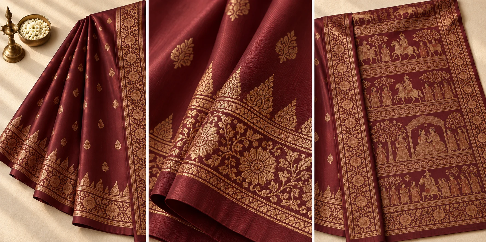

View sareeRanga Oxblood Baluchari
Natural silk · Handloom
XX$Bishnupur · Narrative handloom silk
A storied Bengal silk whose broad pallu turns the loom into a canvas for music, gardens and scenes of life.
The collection
Our Baluchari edit celebrates substantial natural silk, ornate borders and narrative panels woven into the anchal. These are demonstration pieces for the current website template; final products, photographs and prices can be replaced when inventory is ready.